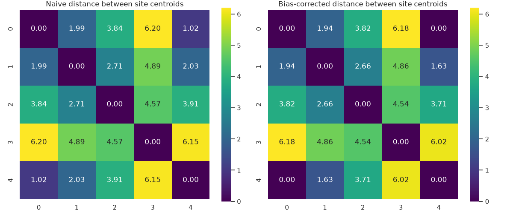
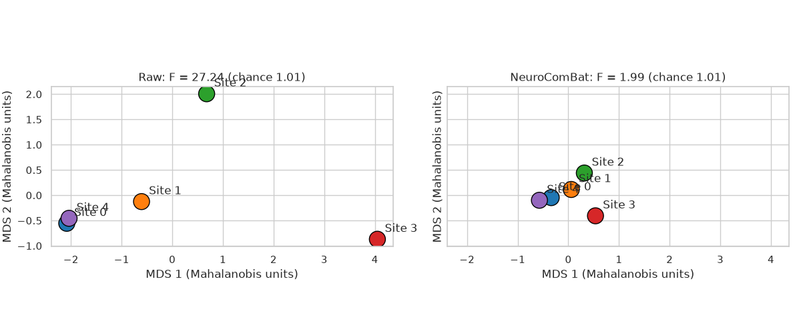

Note
Go to the end to download the full example code.
Map the distances between site centroids#
site_centroid_distance also returns the distance between every pair of
site centroids. This example shows
why these distances must be corrected for sampling noise,
how to draw an exact 2D map of the sites from them, before and after harmonization,
how to keep biological differences between sites from being counted as an Effect of Site (EoS).
Imports#
from uniharmony import verbosity
verbosity("warning") # before importing the harmonizers, so their loggers are silenced too
import matplotlib.pyplot as plt
import numpy as np
import pandas as pd
import seaborn as sns
from scipy.stats import norm
from sklearn.metrics import pairwise_distances
from sklearn.model_selection import train_test_split
from uniharmony.combat import NeuroComBat
from uniharmony.datasets import make_multisite_classification
from uniharmony.metrics import site_centroid_distance
sns.set_theme(style="whitegrid")
random_state = 42
Data#
Five sites of very different sizes. Sites 0 and 4 have (practically) no EoS, so their true centroid distance is about 0; the EoS of sites 1 to 3 grows with the site index.
X, y, sites = make_multisite_classification(
n_sites=5,
n_samples=[600, 500, 400, 300, 40],
n_features=50,
site_effect_strength=[1e-3, 0.5, 1, 1.5, 1e-3], # 1e-3: (practically) no EoS
random_state=random_state,
)
Sampling noise inflates naive distances#
The squared distance between two estimated centroids is inflated by
tr(S_a) / n_a + tr(S_b) / n_b. With 50 features, the small site 4
looks far away from site 0 although they come from the same distribution.
site_centroid_distance removes this bias.
centroids = pd.DataFrame(X).groupby(sites).mean()
naive = pd.DataFrame(pairwise_distances(centroids), index=centroids.index, columns=centroids.index)
corrected = site_centroid_distance(X, sites, metric="euclidean", n_permutations=0)["pairwise_distance"]
fig, axes = plt.subplots(1, 2, figsize=(12, 5))
for ax, (title, distance) in zip(axes, {"Naive": naive, "Bias-corrected": corrected}.items()):
sns.heatmap(distance, annot=True, fmt=".2f", cmap="viridis", vmin=0, vmax=naive.to_numpy().max(), square=True, ax=ax)
ax.set_title(f"{title} distance between site centroids")
plt.tight_layout()

A map of the sites#
Classical multidimensional scaling (MDS) places the centroids in 2D so that their distances match the distance matrix as well as possible. Unlike a t-SNE plot of the samples, it is computed from the metric itself.
NeuroComBat is fitted on training data and the distances are computed on
test data. The default Mahalanobis distance D is in units of the
within-site standard deviation; Phi(D / 2) is the accuracy of the best
classifier telling the two sites apart if the data were Gaussian.
def classical_mds(distance: pd.DataFrame) -> np.ndarray:
"""Return 2D coordinates whose distances best match ``distance``."""
n = len(distance)
centering = np.eye(n) - 1 / n
gram = -0.5 * centering @ distance.to_numpy() ** 2 @ centering
eigenvalues, eigenvectors = np.linalg.eigh(gram)
top = np.argsort(eigenvalues)[::-1][:2]
return eigenvectors[:, top] * np.sqrt(np.clip(eigenvalues[top], 0, None))
X_train, X_test, sites_train, sites_test = train_test_split(X, sites, test_size=0.5, stratify=sites, random_state=random_state)
combat = NeuroComBat().fit(X_train, sites_train)
results = {
"Raw": site_centroid_distance(X_test, sites_test),
"NeuroComBat": site_centroid_distance(combat.transform(X_test, sites_test), sites_test),
}
fig, axes = plt.subplots(1, 2, figsize=(12, 5), sharex=True, sharey=True)
for ax, (name, result) in zip(axes, results.items()):
coordinates = classical_mds(result["pairwise_distance"])
ax.scatter(*coordinates.T, c=sns.color_palette("tab10", len(coordinates)), s=300, edgecolor="black")
for label, (x, y_coord) in zip(result["pairwise_distance"].index, coordinates):
ax.annotate(f"Site {label}", (x, y_coord), xytext=(8, 8), textcoords="offset points")
ax.set_title(f"{name}: F = {result['statistic']:.2f} (chance {result['null_mean']:.2f})")
ax.set_xlabel("MDS 1 (Mahalanobis units)")
ax.set_ylabel("MDS 2 (Mahalanobis units)")
ax.set_aspect("equal")
plt.tight_layout()
for name, result in results.items():
print(f"{name}: equivalent site-prediction accuracy, Phi(D / 2)")
print((result["pairwise_distance"] / 2).apply(norm.cdf).round(2), end="\n\n")

Raw: equivalent site-prediction accuracy, Phi(D / 2)
0 1 2 3 4
0 0.50 0.83 0.97 1.00 0.50
1 0.83 0.50 0.90 0.99 0.77
2 0.97 0.90 0.50 0.99 0.97
3 1.00 0.99 0.99 0.50 1.00
4 0.50 0.77 0.97 1.00 0.50
NeuroComBat: equivalent site-prediction accuracy, Phi(D / 2)
0 1 2 3 4
0 0.50 0.60 0.66 0.68 0.56
1 0.60 0.50 0.61 0.65 0.65
2 0.66 0.61 0.50 0.67 0.70
3 0.68 0.65 0.67 0.50 0.72
4 0.56 0.65 0.70 0.72 0.50
Conditioning on biology#
Here there is no EoS at all, but the diagnosis is much more frequent in
site 1 than in site 0. Because the diagnosis changes the features, the
centroids differ: the unconditional metric reports an EoS that is in fact
biology. Passing y compares the sites within each diagnostic group
and removes this confound.
X, y, sites = make_multisite_classification(
n_sites=2,
n_samples=600,
n_features=20,
balance_per_site=[[0.8, 0.2], [0.2, 0.8]],
site_effect_strength=0,
random_state=random_state,
)
for label, target in {"Ignoring diagnosis": None, "Within diagnosis (y=y)": y}.items():
result = site_centroid_distance(X, sites, y=target)
print(f"{label:>24}: F = {result['statistic']:6.2f} (chance {result['null_mean']:.2f}), p = {result['p_value']:.3f}")
plt.show()
Ignoring diagnosis: F = 11.13 (chance 1.02), p = 0.001
Within diagnosis (y=y): F = 0.98 (chance 1.02), p = 0.540
Total running time of the script: (0 minutes 10.823 seconds)